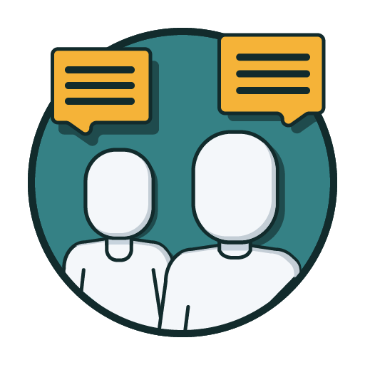
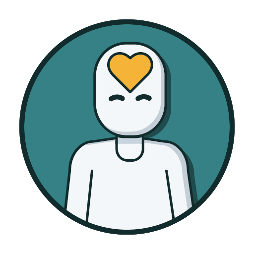
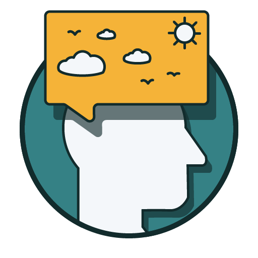
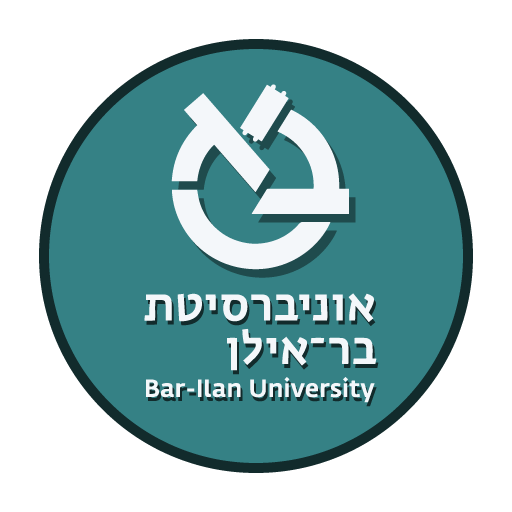
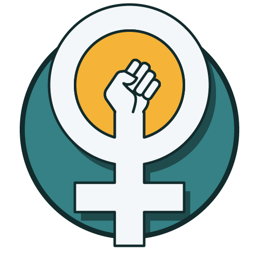

מגוון סדנאות קבוצתיות לפיתוח אישי, רגשי וחברתי — בהנחיית אנשי מקצוע מומחים

במערך מתקיימות שלוש קבוצות לתקשורת בין אישית המונחות במקביל על-ידי העובדות הסוציאליות והרכז השיקומי. בקבוצות מושם דגש על: תמיכה הדדית, חיזוק הביטחון והדימוי העצמי, מיומנויות הקשבה, הדהוד והעצמת הכוחות. חלק מהפגישות מוקדשות גם לנושא ההכנה לתעסוקה.

סדנא של מודעות קשובה (קשיבות — איכות של תשומת לב הניתנת לפיתוח על-ידי אימון ותרגול). מדובר במודעות לא שיפוטית אשר באופן עקבי מופנית אל עבר מה שקורה ברגע הנוכחי.

דמיון מודרך הוא שיטת טיפול קוגניטיבית אשר משמשת ככלי להרפיה נפשית עמוקה, שליטה בתגובות פיזיולוגיות, ואמצעי ל"תרגול" מנטלי של מצבים והתנהגויות אשר המטופל מתקשה ליישמם בחיי היום-יום.
מטרת הסדנא לשפר מיומנויות ויכולת קבלת החלטות מושכלת של הדיירים להתנהלות יעילה ואופן השימוש בכסף.

קורס דו-שנתי המכוון לצמיחה אישית ולביסוס זהות של מסוגלות, באמצעות לימוד מבואות מעולם הפסיכולוגיה. הנחת היסוד היא כי על מנת להשתלב באופן מיטבי בחיים תעסוקתיים, חברתיים וזוגיים — על האדם להכיר בערך עצמו ובכוחותיו.

קבוצה לדיירות המערך המונחית על-ידי אחת מהעובדות הסוציאליות. העבודה בקבוצת הבנות כוללת בין השאר את הנושאים הבאים: דימוי עצמי, דימוי גוף, העלאת הביטחון העצמי — "להיות בטוב עם עצמי כפי שאני", צריכת מידע מהרשתות החברתיות, הכנה לקשר זוגי ועוד.
סדנת הפסיכודרמה מתקיימת במסגרת קבוצתית. חברי הקבוצה משתתפים במשחק תפקידים ובכך מסייעים ליחיד המביא את סיפורו במסע החקירה של עולמו הרגשי, של מכאוביו, וכן של מקורות הכוח והשמחה, תוך יצירת אפשרות לחוויות חדשות ומתקנות. הפסיכודרמה היא כלי טיפולי אפקטיבי ומרגש, התורם לפיתוח הספונטניות, האותנטיות והיצירתיות. הסדנא מועברת על-ידי מטפלת מומחית לטיפול בפסיכודרמה בקבוצה קטנה של דיירים.
הצורך בהבנה ובידע בסיסי בנוגע לחינוך מיני-חברתי מתבסס על אמונה כי מיניות האדם טובה ובריאה במהותה ומהווה חלק בלתי נפרד מהקיום האנושי ומאיכות החיים של כל פרט. אמונה זו רלוונטית גם לאנשים עם צרכים מיוחדים. הסדנא מועברת לדיירים על-ידי מומחית לחינוך מיני-חברתי ועוסקת בנושאים כגון: הכנה לזוגיות, הזכות לביטוי מיני, פרטיות, קרבה ואינטימיות ועוד.